Platillo 1
"La gastronomia es tradición servida en cada platillo."

Platillo 2
"Sabores que cuentan la historia de nuestra tierra."

Platillo 3
"El sabor comienza con una buena salsa."

Platillo 4
"Sabor que se queda en la memoria"

Platillo 5
"Cada bocado, un viaje"

Platillo 6
"Un pedacito de MÉXICO en cada bocado"

Platillo 7
"Tradición que se come y se disfruta"
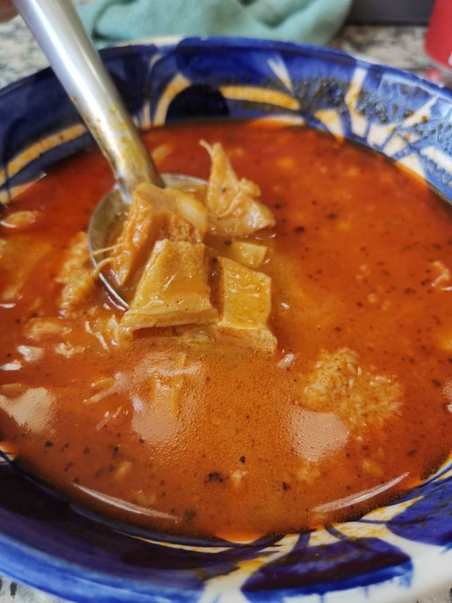
Platillo 8
"Sabores que cuentan historias"

Platillo 9
"El corazon de México en un plato"
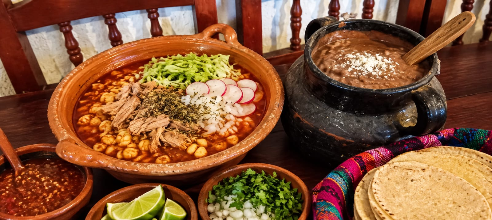
Platillo 10
"Cocina con alma, servida con amor"

Platillo 11
"Cada platillo, un viaje a nuestras raices"
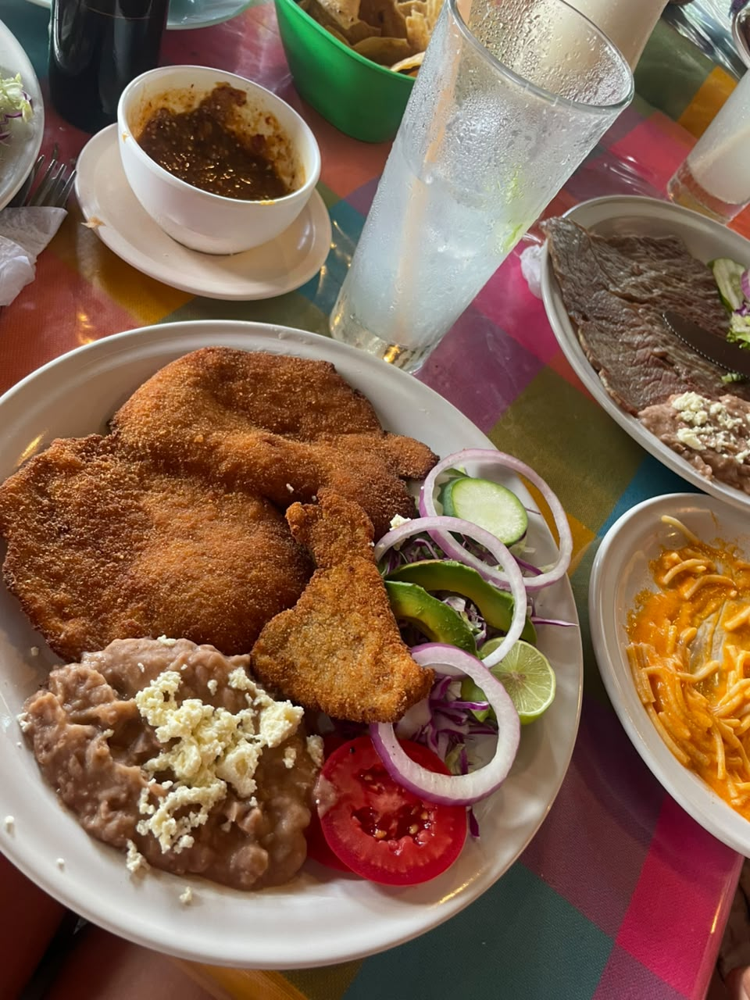
Platillo 12
"El autentico sabor a nuestras tierras"
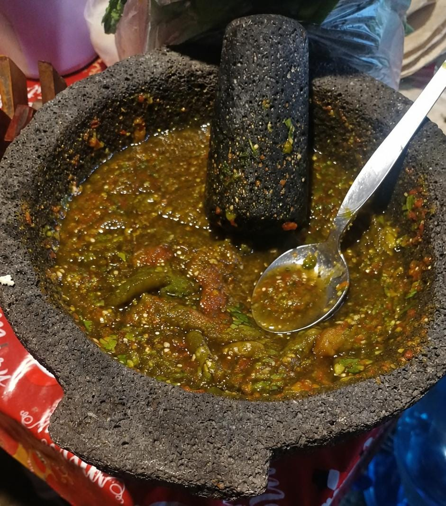
Platillo 13
"Comida que abraza al corazon"

Platillo 14
"Recetas de ayer, gusto de hoy"
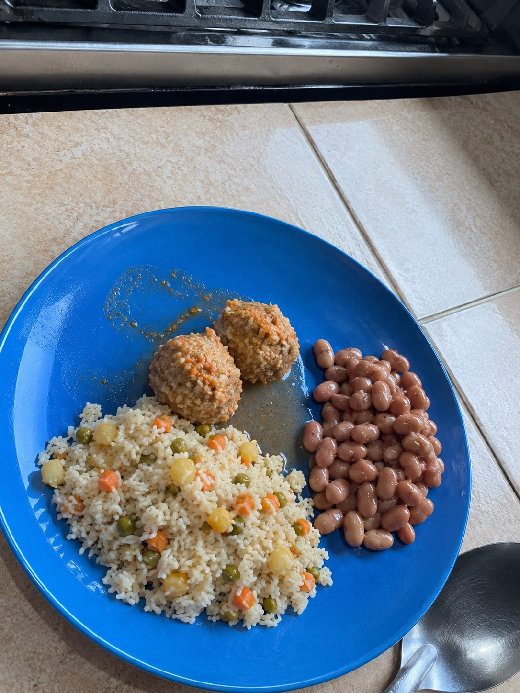
Platillo 15
"El placer esta en el sazón mexícano"

Platillo 16
"México se saborea aqui"

Platillo 17
"Un antojo, mil recuerdos"
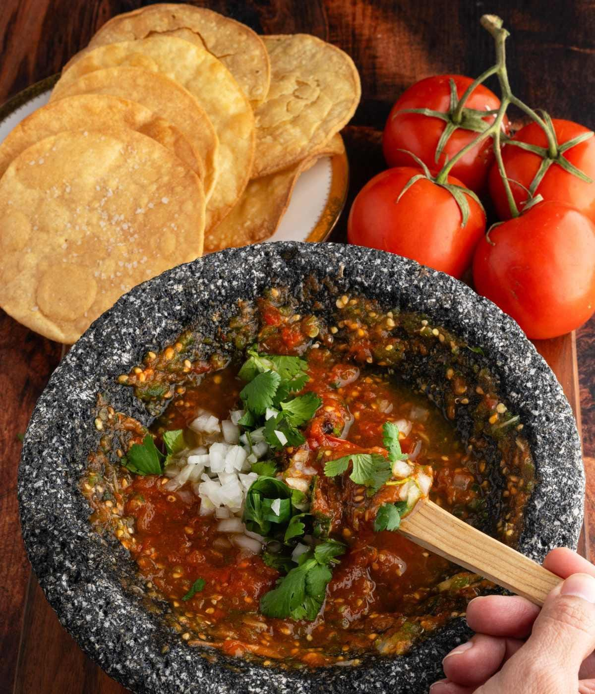
Platillo 18
"Cocina que une familias"

Platillo 19
"Del campo a tu mesa, con orgullo"

Platillo 20
"Probar es enamorarse de México"

Platillo 21
"El sabor que nos une como familia"
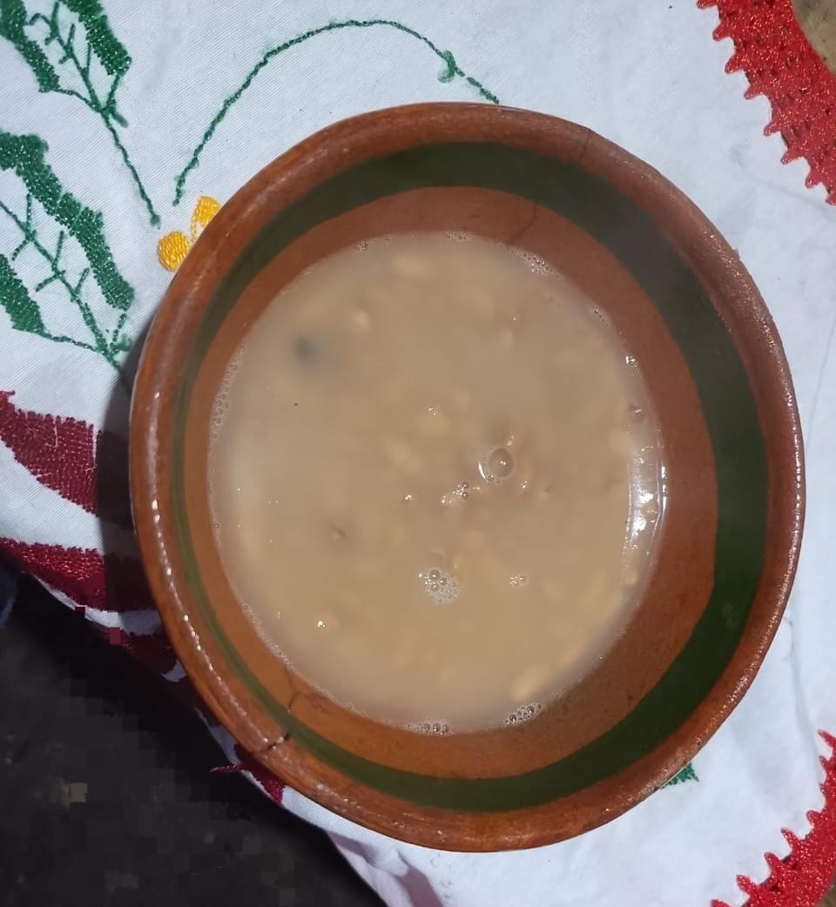
Platillo 22
"El sabor que nos representa"

Platillo 23
"Cada mordida es una tradición"

Platillo 24
"El gusto de México en tu mesa"
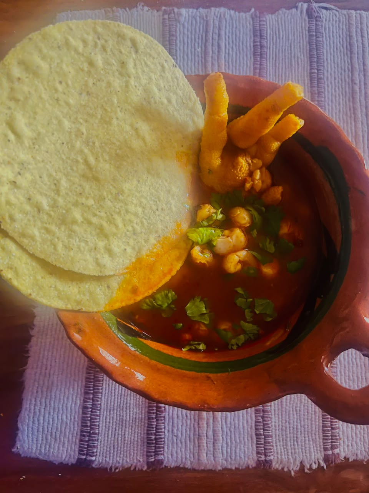
Platillo 25
"Cada ingrediente tiene una historia que contar"
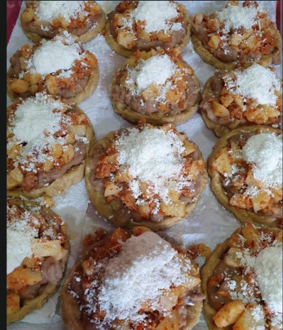
Platillo 26
"El secreto esta en el sazón de casa"

Platillo 27
"La cocina es herencia que se saborea"

Platillo 28
"Cocinar es mantener viva nuestra cultura"

Platillo 29
"Tradición que se sirve caliente"

Platillo 30
"El sazón es el lenguaje de la abuela"

Platillo 31
"Comer es viajar sin salir del pueblo"
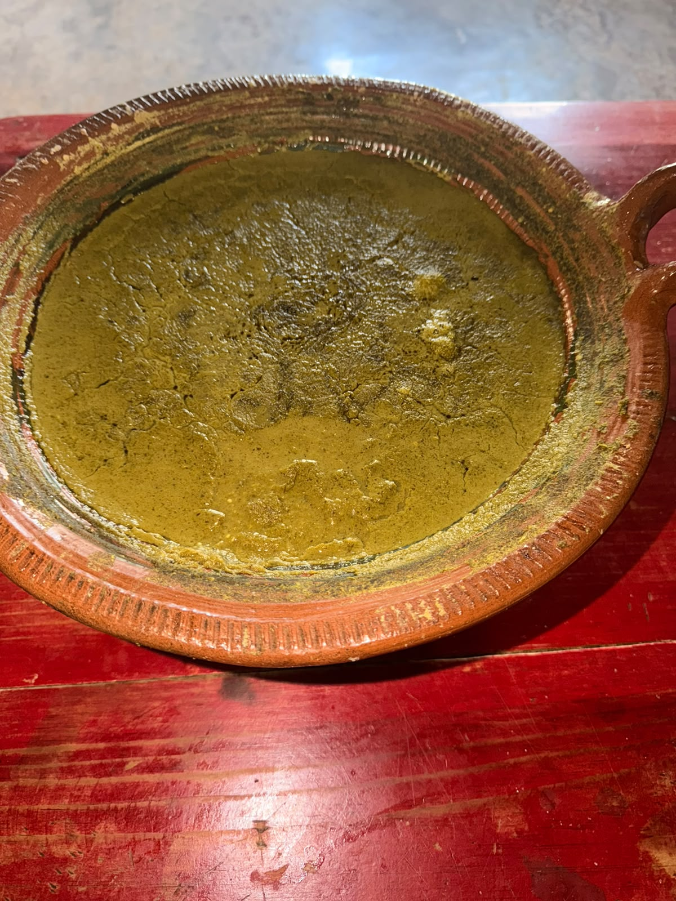
Platillo 32
"Cada platillo, un viaje a nuestras raices"
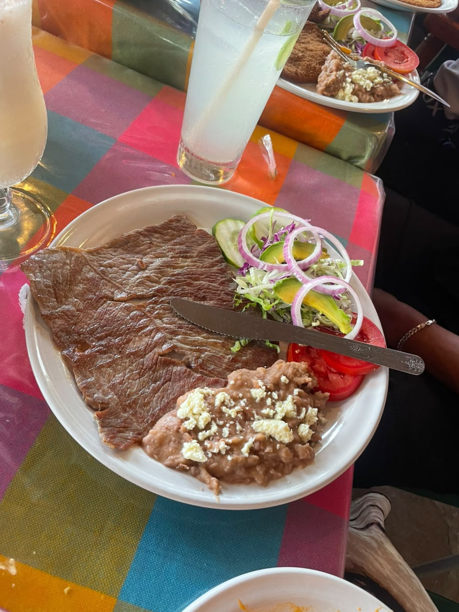
Platillo 33
"Cada platillo son sentimientos"

Platillo 34
"El sabor de México no tiene comparación"
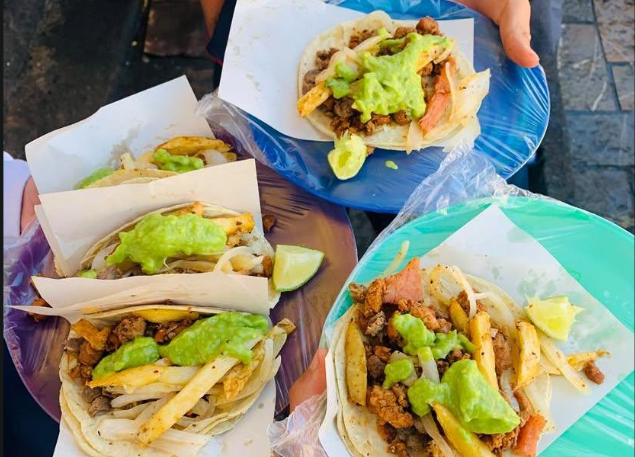
Platillo 35
"Un buen platillo cuenta lo que somos"

Platillo 36
"Cocinar es compartir el alma con el pueblo"